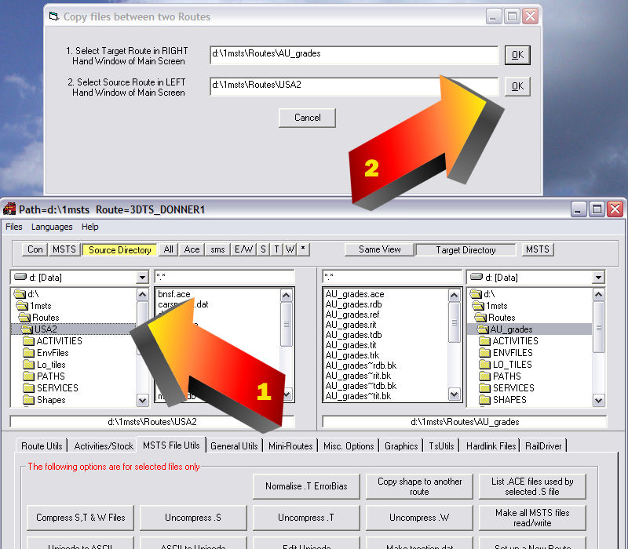

Route Riter: Copying Shapes from One Route to Another
by Yuri Sos
Overview
- Open Route_Riter.
- Click on MSTS File Utils:
Click on Copy shape to another route:
- Another window pops up - sometimes on top of the main Route_Riter screen, sometimes offset:
- I re-arrange the windows so that the pop-up window sits clear of and above the main Route_Riter screen:
- Select and click on the route that requires the shapes (the target route) you require in the right-hand window (1): it immediately pops into the first dialogue box in the pop-up window: press "ok" (2):

- When you click "ok", the pop-up window changes, asking you to select the route from which you wish to copy the shapes (the source route):
- Select and click on the route from which you want to copy the shapes (the source route) in the left-hand window (1): it immediately pops into the second dialogue box in the pop-up window: press "ok" (2):

- When you click "ok", the pop-up window changes, asking you to select the shapes you wish to copy:
- Select the shapes you require: the standard windows selection process applies: click to select one shape, ctrl-click to select multiple shapes or Shift-click to select a sequential list of shapes (1): when you're done, click "ok" on the upper window to commence copying the files (2):
- A DOS box pops up - the .s, .sd and .ace files (including all seasonal variations) are copied from the source route to the target route: in addition the .ref entries are added to the target route's .ref file.
- All done. When you next open your target route, the shapes will be available for your placement.